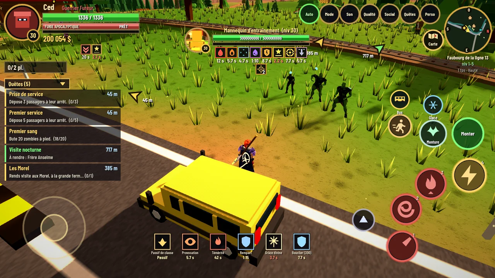
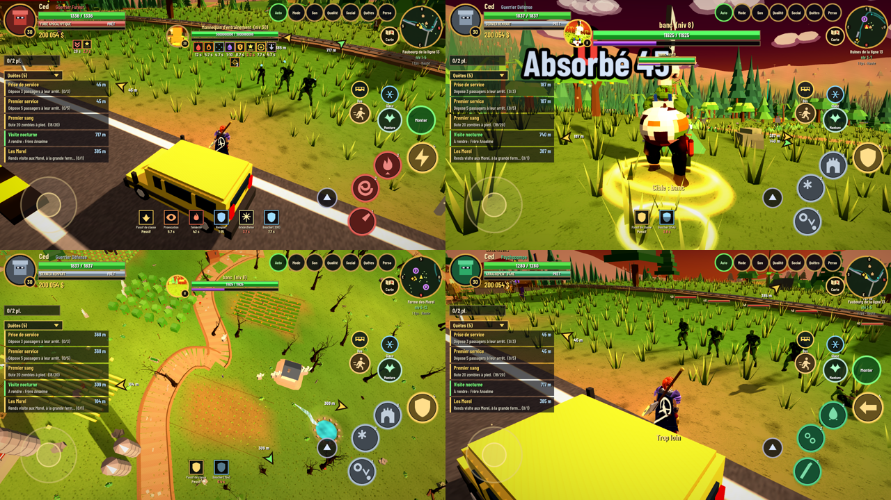
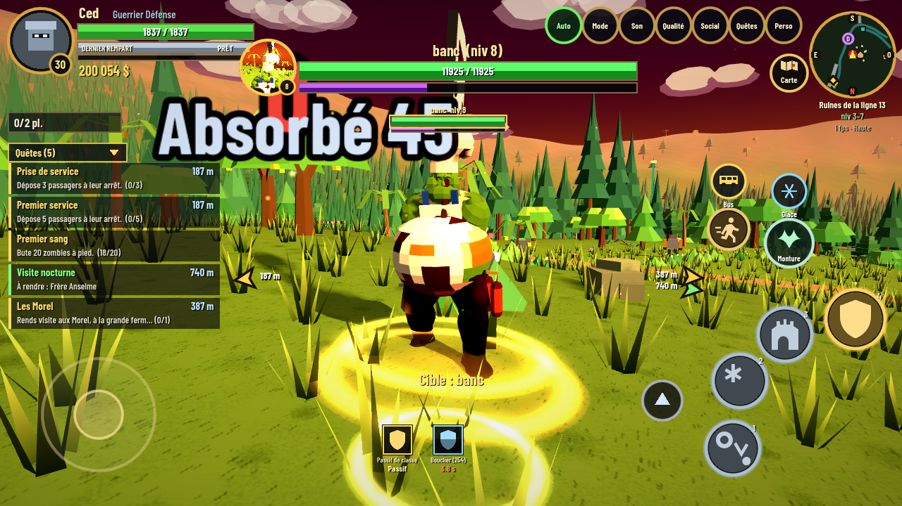
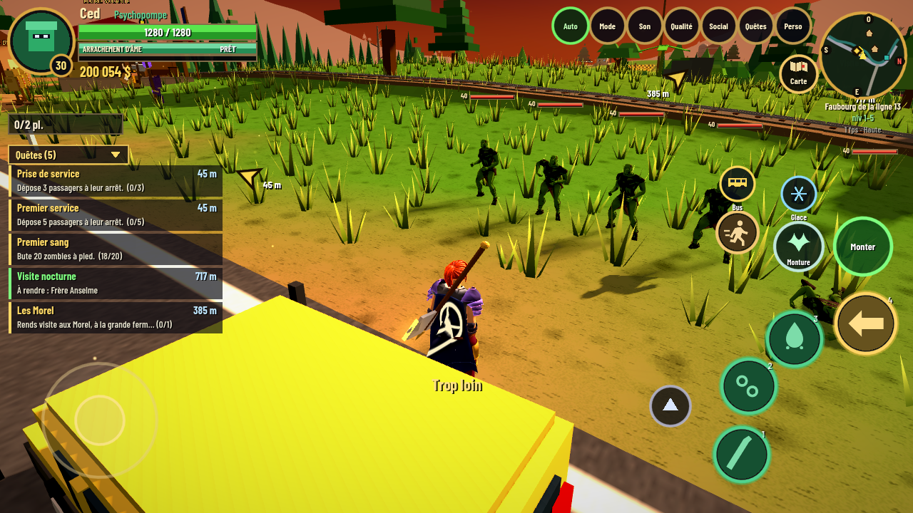

Serveur : vérification...
Connexion et distribution centralisées depuis ton serveur.
Build --
Voir le changelog

Explore un monde hostile, accomplis des quêtes, affronte des zombies, progresse en classe, traverse des donjons et prépare-toi aux grands raids comme La Nécropole.
Connexion et distribution centralisées depuis ton serveur.
Bus Apocalypse mélange exploration, combats, classes, boss, zones spéciales, progression de personnage et contenu coopératif. L’idée est de faire sentir aux joueurs qu’ils entrent dans un vrai projet vivant.
Route, zones hostiles, lieux infectés, monde évolutif et découvertes permanentes.
Choisis ton style de jeu, améliore ton personnage, équipe-toi et développe ta puissance.
Des combats organisés, des boss à mécaniques et une montée en difficulté pour les groupes.
Avance dans le monde, suis les objectifs, débloque des zones et structure la progression du joueur.
Jouer maintenantAffronte des ennemis variés, gère tes compétences, ton placement et les effets de combat.
Voir des screensDes instances où le groupe avance, gère les vagues, les élites et les premiers vrais boss.
Voir le contenuCombats majeurs, mécaniques, phases et grands ennemis comme Ossaryx ou Agramor.
Découvrir le raidConstruis ton style de combat, ta survie et ta puissance selon ton rôle dans l’équipe.
TéléchargerGroupes, entraide, évolution continue du projet et communauté de testeurs autour du jeu.
Rejoindre



Un contenu pensé pour les joueurs qui veulent du défi : vagues d’élites, progression de salle en salle, boss marquants et ambiance nécromantique immersive.
La dernière version Android, l’accès iOS et la communauté.
La dernière version 3D (moteur Godot) : Psychopompe, set Ultime Dragon, buffs et debuffs à l’écran, chemin de terre, nouveau loot.
Télécharger l’APKTestFlight ou accès iOS selon ton lien.
Installer sur iPhoneInvite tes joueurs vers un seul lien et mets à jour l’app sans refaire tout le site.
Rejoindre le projetCentralise les téléchargements, les nouveautés, les screenshots et la découverte du projet.